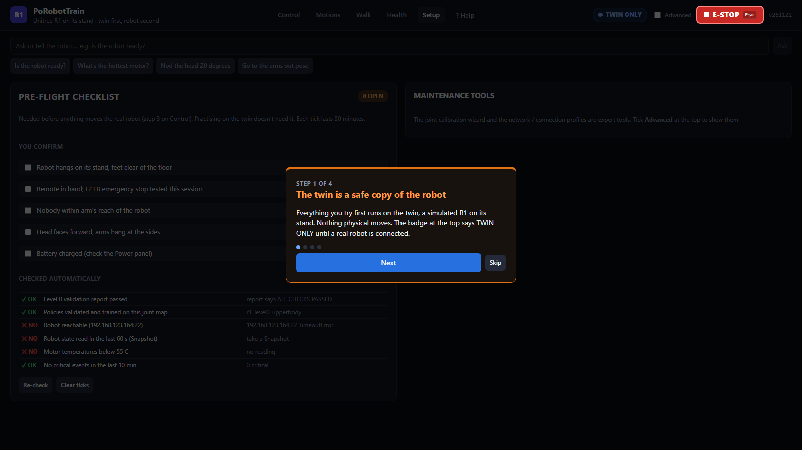
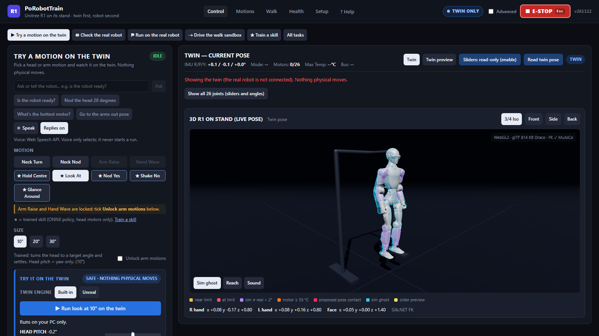
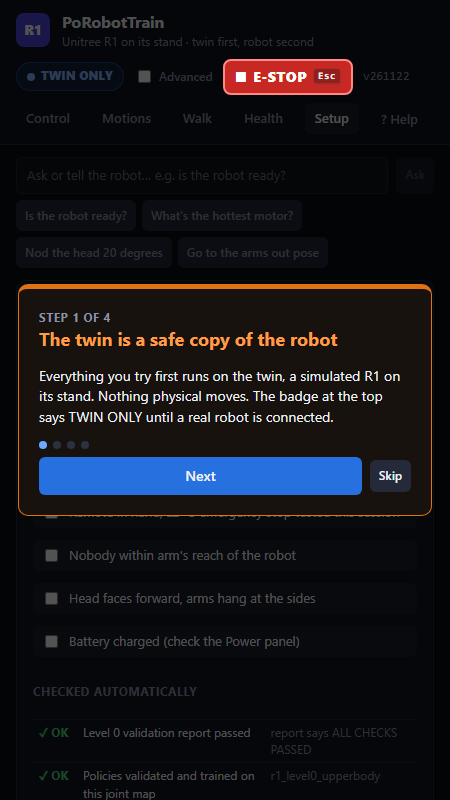
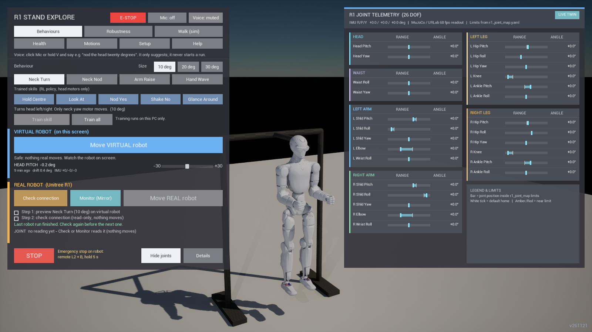
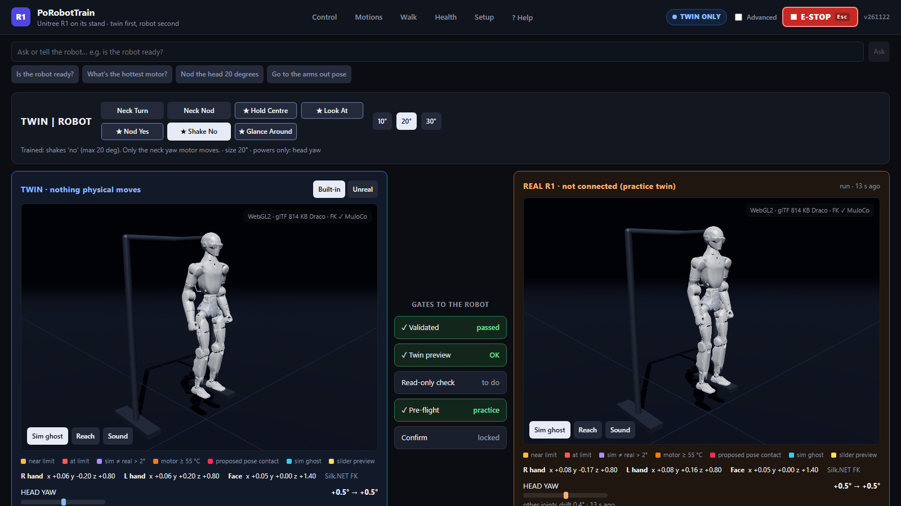

Trained head skills: train, play on the twin, run on the robot
2026-11-22 · Five RL head skills (Hold Centre, Look At, Nod Yes, Shake No, Glance Around) added to the Blazor client and the Unreal panel. Blazor: Development build on port 5080 against the behaviour service on 8765, captured with headless Chrome through the DevTools protocol. Unreal: R1TwinEditor Development, -game -PanelCapture. Contract: docs/head_skills.md, docs/service_api.md section 8. No physical robot was connected: robot steps ran in practice mode.
Validation (all five passed)
| Skill | Motors | Nominal | 8 randomised robots | Jetson code path on realistic twin | Unreal twin (URLab) |
|---|---|---|---|---|---|
| Hold Centre | pitch + yaw | 0.10° | 0.10° | 0.11° | — |
| Look At | pitch + yaw | 0.82° | 0.82° | 0.82° | 0.41° |
| Nod Yes | pitch only | 0.19° | 0.29° | 0.40° | — |
| Shake No | yaw only | 0.64° | 0.63° | 0.71° | — |
| Glance Around | pitch + yaw | 0.91° | 0.87° | 0.82° | 0.75° |
Mean tracking error against the skill's reference motion (Look At: last 0.5 s of each target). The bars are 1.0–5.0° depending on the skill. Other joints moved at most 2.0° in validation and 3.1° on the Unreal twin, against a 5° abort limit.
Before


After

/skills: each card shows its state, motors, max size and validation errors, plus Train or Retrain, Play on twin and Run on robot. Play and Run are locked until the skill is validated. Train all five is at the top, with a progress bar while training runs.


Twin | Robot (/mission)
